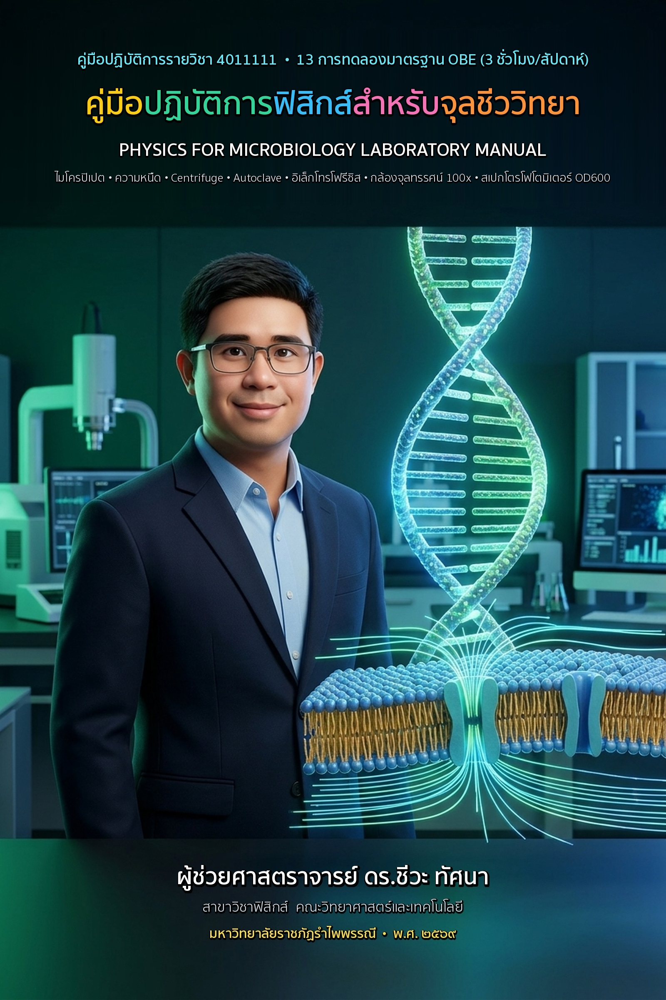

เชื่อมโยง PLO 1, 2, 3, 5, 6 (หน้า 7 เล่มหลักสูตร) สู่ CLO 1–4 ครบ 100%
ดูรายละเอียด →บันไดแปลงหน่วยไมโครลิตร, สามเหลี่ยมกฎโอห์ม, กราฟ RCF และครึ่งชีวิตแบบนับรอบ
เปิดคู่มือสรุปสูตร →เชื่อมโยงเครื่องมือจริง: Micropipette, Centrifuge, Autoclave, Microscope, OD600
เปิดคู่มือปฏิบัติการ →ระบบบทเรียนออนไลน์ ไทย-อังกฤษ-จีน พร้อมห้องแล็บเสมือนและคลังข้อสอบ
เข้าสู่ระบบเว็บรายวิชา →เอกสารคำสอน ฟิสิกส์สำหรับจุลชีววิทยา (12 บทเรียน OBE)
เรียบเรียงตามแผนการสอน OBE (PLO1–PLO6 สู่ CLO1–CLO4) สำหรับนักศึกษาจุลชีววิทยา ใช้เทคนิค สามเหลี่ยมสูตรคำนวณไร้แคลคูลัส (Low-Math Guide) ครบทั้ง 12 บท พร้อมแบบฝึกหัดและเฉลยละเอียด

คู่มือปฏิบัติการฟิสิกส์สำหรับจุลชีววิทยา (13 การทดลอง)
คู่มือปฏิบัติการและใบบันทึกผลการทดลองประจำกลุ่ม ครบ 13 การทดลอง (3 ชม./สัปดาห์) เชื่อมโยงเครื่องมือจุลชีววิทยาจริง (Micropipette, Centrifuge, Autoclave, Immersion Oil 100x, UV-C, OD600)
เอกสารคำสอนฉบับความจริงเสริม 3 มิติ (3D WebAR & ArUco Marker Edition)
ผสานมาร์กเกอร์เวกเตอร์ ArUco 4×4 (รหัส ID 0 ถึง ID 11) ลงในเอกสารคำสอนทั้ง 12 บทเรียน พร้อมเว็บแอปสแกนเนอร์ 3D WebAR (Three.js PBR) ที่ใช้กล้องสมาร์ทโฟนส่องมาร์กเกอร์บนหน้าหนังสือเพื่อหมุนสำรวจและปรับค่าตัวแปรทางฟิสิกส์ของเครื่องมือจุลชีววิทยา 3 มิติครบ 12 บทแบบเรียลไทม์
ตารางแผนการสอน 15 สัปดาห์ (ทฤษฎี 2 ชม. + ปฏิบัติการ 3 ชม.) พร้อมลิงก์สื่อการสอน
คลิกที่ปุ่มในคอลัมน์ขวาเพื่อเปิดบทเรียน แล็บ และซิมูเลชัน| สัปดาห์ | หัวข้อบรรยาย (2 ชม.) | หัวข้อปฏิบัติการ (3 ชม.) | จุดเน้น Low-Math / จุลชีววิทยา | สื่อการสอน / Lab / Sim |
|---|---|---|---|---|
| 1 | บทนำ: ระบบหน่วยและการวัด SI Units, คำอุปสรรค (m, μ, n), เลขนัยสำคัญ |
Lab 1: การวัดพื้นฐานและไมโครปิเปต เวอร์เนียร์, ชั่งน้ำตรวจสอบ Micropipette |
บันไดแปลงหน่วย ×1,000 / ÷1,000 สำหรับ Serial Dilution | บทที่ 1 Lab 1 Sim 1 |
| 2 | เวกเตอร์และการเคลื่อนที่ สเกลาร์/เวกเตอร์, การเคลื่อนที่ของเหลว |
Lab 2: การเคลื่อนที่และกราฟความเร็ว กราฟความเร็ว-เวลา & Brownian Motion |
เปรียบเทียบ Brownian Motion กับ Chemotaxis แบคทีเรีย | บทที่ 2–3 Lab 2 Sim 3 |
| 3 | กฎการเคลื่อนที่ของนิวตันและแรงหนืด กฎ 3 ข้อ, แรงเสียดทาน, ความหนืด (Viscosity) |
Lab 3: กฎของนิวตันและแรงหนืด การตกตะกอนในของเหลวความหนืดต่างกัน |
สัดส่วนการตกตะกอนของยีสต์เทียบกับแบคทีเรีย | บทที่ 4 Lab 3 Sim 5 |
| 4 | งาน พลังงาน และกำลัง อนุรักษ์พลังงาน, การประยุกต์ใน Centrifuge |
Lab 4: พลังงานและเครื่อง Centrifuge คำนวณ RPM ↔ RCF (×g) และถ่วงสมดุลโรเตอร์ |
ใช้ซิมูเลชันแปลง RPM เป็น ×g และฝึกถ่วงสมดุลหลอด | บทที่ 7 Lab 4 Sim Centrifuge |
| 5 | ความร้อนและอุณหพลศาสตร์ (1) อุณหภูมิ, การถ่ายโอนความร้อน, Incubator |
Lab 5: ความร้อนจำเพาะและตู้อบเชื้อ ความร้อนจำเพาะ & เสถียรภาพ Incubator/PCR |
เทียบการถ่ายโอนความร้อน Water Bath vs Incubator | บทที่ 9 Lab 5 Sim PCR |
| 6 | ความร้อนและอุณหพลศาสตร์ (2) การเปลี่ยนสถานะ, หม้อนึ่งไอน้ำ (Autoclave) |
Lab 6: ความดันไอและหลักการ Autoclave ความดัน 15 psi → 121°C & กรณีศึกษา |
วิเคราะห์สาเหตุการนึ่งฆ่าเชื้อไม่สมบูรณ์และขวดระเบิด | บทที่ 9.2 Sim 6 |
| 7 | สอบกลางภาค (ทฤษฎี — 2 ชม.) | สอบกลางภาค (ปฏิบัติการ — 3 ชม.) | วัดผล CLO1, CLO2, CLO3 (สัปดาห์ที่ 1–6) | คลังข้อสอบ |
| 8 | ไฟฟ้าสถิตในระบบชีวภาพ ประจุไฟฟ้า, กฎคูลอมบ์, ศักย์ไฟฟ้าเยื่อหุ้มเซลล์ |
Lab 7: ไฟฟ้าสถิตและประจุของเซลล์/สีย้อม การเหนี่ยวนำไฟฟ้าและแรงดูดประจุสีย้อมแกรม |
ทำไมสีย้อมประจุบวกจึงเกาะผนังเซลล์แบคทีเรียประจุลบ | บทที่ 10.1 Lab 7 |
| 9 | ไฟฟ้ากระแสและเครื่องมือวิเคราะห์ กฎของโอห์ม, pH meter, Gel Electrophoresis |
Lab 8: กฎของโอห์มและ Electrophoresis ต่อวงจรวัดกระแส/แรงดัน & แยกขนาดสาย DNA |
สามเหลี่ยมกฎโอห์ม (V = IR) และการแยกสาย DNA ประจุลบ | บทที่ 10.2 Sim Gel |
| 10 | ทัศนศาสตร์ (1): การสะท้อนและการหักเห ธรรมชาติของแสง, ดัชนีหักเห (n), เลนส์ |
Lab 9: การสะท้อนและการหักเหผ่านตัวกลาง การหักเหผ่านแท่งแก้วและหาความยาวโฟกัสเลนส์ |
วาดทางเดินแสง (Ray Tracing) แทนการบวกลบเศษส่วน | บทที่ 11.1 Lab 9 |
| 11 | ทัศนศาสตร์ (2): กล้องจุลทรรศน์ กำลังขยาย, Numerical Aperture (NA), Immersion Oil |
Lab 10: เลนส์และกล้องจุลทรรศน์ ฝึกใช้หัว 100× กับ Immersion Oil และวัดขนาดเซลล์ |
PBL: ทำไม Immersion Oil (n=1.515) จึงทำให้ภาพคมชัด | บทที่ 11.2 Sim Microscope |
| 12 | กัมมันตภาพรังสีและการฆ่าเชื้อด้วยรังสี ชนิดรังสี, ครึ่งชีวิต, การฉายรังสี UV-C / Gamma |
Lab 11: การสลายตัวและความเข้มรังสี UV จำลองครึ่งชีวิตและระยะห่างหลอด UV ฆ่าเชื้อ |
คิดแบบนับรอบครึ่งชีวิต (÷2) และค่า D-value (ลดลง 90%) | บทที่ 12 Lab 11 Sim Decay |
| 13 | บูรณาการฟิสิกส์กับจุลชีววิทยา Spectrophotometer (OD600), Centrifuge, Autoclave |
Lab 12: สเปกโตรโฟโตมิเตอร์ (OD600) วัดค่าการดูดกลืนแสงและสร้างกราฟมาตรฐาน |
ลากเส้นตรง Standard Curve อ่านค่าความข้นของเชื้อ | ใบงาน Lab 12 |
| 14 | สรุปและทบทวนองค์ความรู้ สรุปแผนผังเครื่องมือแล็บและติวแนวข้อสอบ |
Lab 13: นำเสนอผลงาน (Mini-Project) นำเสนอการประยุกต์ฟิสิกส์กับเครื่องมือจุลชีววิทยา |
Oral Presentation & Peer Assessment (CLO4) | สรุปสูตร |
| 15 | สอบปลายภาค (ทฤษฎี — 2 ชม.) | สอบปลายภาค (ปฏิบัติการ — 3 ชม.) | วัดผล CLO1, CLO2, CLO3 (สัปดาห์ที่ 8–14) | คลังข้อสอบ |